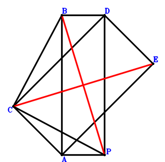
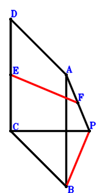
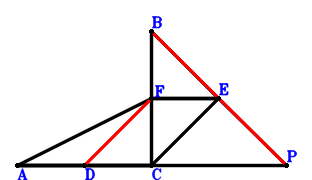
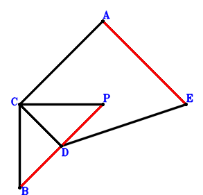
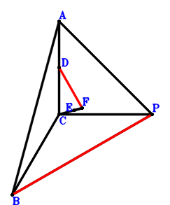

Exercise 2： Let BAPD and EACD be parallelograms. PC=BC. Prove that EC⊥PB.

\(\because \) BAPD is a parallelogram \(\therefore \small\overrightarrow{CD}=- \small\overrightarrow{CA} + \small\overrightarrow{CB} + \small\overrightarrow{CP}\).\(\because \) EACD is a parallelogram \(\therefore \small\overrightarrow{CE}=\small\overrightarrow{CB} + \small\overrightarrow{CP}\).\(\because \) PC=BC \( \therefore- \small\overrightarrow{CB}^{2} + \small\overrightarrow{CP}^{2}=0.\)In conclusion, \(\small\overrightarrow{CE} \cdot \small\overrightarrow{PB}=\small\overrightarrow{CE} \cdot \left(\small\overrightarrow{CB} - \small\overrightarrow{CP}\right)=\left(\small\overrightarrow{CB} - \small\overrightarrow{CP}\right) \cdot \left(\small\overrightarrow{CB} + \small\overrightarrow{CP}\right)=\small\overrightarrow{CB}^{2} - \small\overrightarrow{CP}^{2}=0\), that is, EC⊥PB.
Exercise 14： Let CPAD be a trapezoid with PA//CD and PA=2CD. E is the midpoint of BA. CP=BC. Prove that ED⊥BP.
\(\because \) PA//CD and PA=2CD \(\therefore \small\overrightarrow{PD}=\dfrac{\small\overrightarrow{PA}}{2} + \small\overrightarrow{PC}\).\(\because \) E is the midpoint of BA \(\therefore \small\overrightarrow{PE}=\dfrac{\small\overrightarrow{PA}}{2} + \dfrac{\small\overrightarrow{PB}}{2}\).\(\because \) CP=BC \( \therefore- \small\overrightarrow{CB}^{2} + \small\overrightarrow{PC}^{2}=\small\overrightarrow{PC}^{2} - \left(\small\overrightarrow{PB} - \small\overrightarrow{PC}\right)^{2}=- \small\overrightarrow{PB}^{2} + 2 \small\overrightarrow{PB} \cdot \small\overrightarrow{PC}=0.\)In conclusion, \(\small\overrightarrow{DE} \cdot \small\overrightarrow{PB}=\small\overrightarrow{PB} \cdot \left(- \small\overrightarrow{PD} + \small\overrightarrow{PE}\right)=\small\overrightarrow{PB} \cdot \left(\dfrac{\small\overrightarrow{PB}}{2} - \small\overrightarrow{PC}\right)=\dfrac{\small\overrightarrow{PB}^{2}}{2} - \small\overrightarrow{PB} \cdot \small\overrightarrow{PC}=0\), that is, ED⊥BP.
Exercise 15： Let DCBA be a parallelogram. F, E are the midpoints of AP, DC, respectively. CP=CB. Prove that EF⊥BP.

\(\because \) DCBA is a parallelogram \(\therefore \small\overrightarrow{CD}=\small\overrightarrow{CA} - \small\overrightarrow{CB}\).\(\because \) E is the midpoint of DC \(\therefore \small\overrightarrow{CE}=\dfrac{\small\overrightarrow{CD}}{2}=\dfrac{\small\overrightarrow{CA}}{2} - \dfrac{\small\overrightarrow{CB}}{2}\).\(\because \) F is the midpoint of AP \(\therefore \small\overrightarrow{CF}=\dfrac{\small\overrightarrow{CA}}{2} + \dfrac{\small\overrightarrow{CP}}{2}\).\(\because \) CP=CB \( \therefore- \small\overrightarrow{CB}^{2} + \small\overrightarrow{CP}^{2}=0.\)In conclusion, \(\small\overrightarrow{EF} \cdot \small\overrightarrow{PB}=\left(\small\overrightarrow{CB} - \small\overrightarrow{CP}\right) \cdot \left(- \small\overrightarrow{CE} + \small\overrightarrow{CF}\right)=\left(\dfrac{\small\overrightarrow{CB}}{2} + \dfrac{\small\overrightarrow{CP}}{2}\right) \cdot \left(\small\overrightarrow{CB} - \small\overrightarrow{CP}\right)=\dfrac{\small\overrightarrow{CB}^{2}}{2} - \dfrac{\small\overrightarrow{CP}^{2}}{2}=0\), that is, EF⊥BP.
Exercise 26： Let FACE be a trapezoid with AC//FE and AC=2FE. E, D are the midpoints of BP, AC, respectively. CP=BC. Prove that DF⊥BP.

\(\because \) D is the midpoint of AC \(\therefore \small\overrightarrow{CD}=\dfrac{\small\overrightarrow{CA}}{2}\).\(\because \) E is the midpoint of BP \(\therefore \small\overrightarrow{CE}=\dfrac{\small\overrightarrow{CB}}{2} + \dfrac{\small\overrightarrow{CP}}{2}\).\(\because \) AC//FE and AC=2FE \(\therefore \small\overrightarrow{CF}=\dfrac{\small\overrightarrow{CA}}{2} + \dfrac{\small\overrightarrow{CB}}{2} + \dfrac{\small\overrightarrow{CP}}{2}\).\(\because \) CP=BC \( \therefore- \small\overrightarrow{CB}^{2} + \small\overrightarrow{CP}^{2}=0.\)In conclusion, \(\small\overrightarrow{DF} \cdot \small\overrightarrow{PB}=\left(\small\overrightarrow{CB} - \small\overrightarrow{CP}\right) \cdot \left(- \small\overrightarrow{CD} + \small\overrightarrow{CF}\right)=\left(\dfrac{\small\overrightarrow{CB}}{2} + \dfrac{\small\overrightarrow{CP}}{2}\right) \cdot \left(\small\overrightarrow{CB} - \small\overrightarrow{CP}\right)=\dfrac{\small\overrightarrow{CB}^{2}}{2} - \dfrac{\small\overrightarrow{CP}^{2}}{2}=0\), that is, DF⊥BP.
Exercise 30： Let ACDE be a trapezoid with AE//CD and AE=2CD. D is the midpoint of BP. CP=CB. Prove that AE⊥BP.

\(\because \) D is the midpoint of BP \(\therefore \small\overrightarrow{PD}=\dfrac{\small\overrightarrow{PB}}{2}\).\(\because \) AE//CD and AE=2CD \(\therefore \small\overrightarrow{PE}=\small\overrightarrow{PA} - 2 \small\overrightarrow{PC} + 2 \small\overrightarrow{PD}=\small\overrightarrow{PA} + \small\overrightarrow{PB} - 2 \small\overrightarrow{PC}\).\(\because \) CP=CB \( \therefore- \small\overrightarrow{CB}^{2} + \small\overrightarrow{PC}^{2}=\small\overrightarrow{PC}^{2} - \left(\small\overrightarrow{PB} - \small\overrightarrow{PC}\right)^{2}=- \small\overrightarrow{PB}^{2} + 2 \small\overrightarrow{PB} \cdot \small\overrightarrow{PC}=0.\)In conclusion, \(\small\overrightarrow{AE} \cdot \small\overrightarrow{PB}=\small\overrightarrow{PB} \cdot \left(- \small\overrightarrow{PA} + \small\overrightarrow{PE}\right)=\small\overrightarrow{PB} \cdot \left(\small\overrightarrow{PB} - 2 \small\overrightarrow{PC}\right)=\small\overrightarrow{PB}^{2} - 2 \small\overrightarrow{PB} \cdot \small\overrightarrow{PC}=0\), that is, AE⊥BP.
Exercise 37： Let E be the centroid of △PBA. F, E, C are collinear and FC=3FE. D is the midpoint of AC. PC=BC. Prove that FD⊥PB.

\(\because \) D is the midpoint of AC \(\therefore \small\overrightarrow{CD}=\dfrac{\small\overrightarrow{CA}}{2}\).\(\because \) E is the centroid of △PBA \(\therefore \small\overrightarrow{CE}=\dfrac{\small\overrightarrow{CA}}{3} + \dfrac{\small\overrightarrow{CB}}{3} + \dfrac{\small\overrightarrow{CP}}{3}\).\(\because \) F, E, C are collinear and FC=3FE \(\therefore \small\overrightarrow{CF}=\dfrac{3 \small\overrightarrow{CE}}{2}=\dfrac{\small\overrightarrow{CA}}{2} + \dfrac{\small\overrightarrow{CB}}{2} + \dfrac{\small\overrightarrow{CP}}{2}\).\(\because \) PC=BC \( \therefore- \small\overrightarrow{CB}^{2} + \small\overrightarrow{CP}^{2}=0.\)In conclusion, \(\small\overrightarrow{DF} \cdot \small\overrightarrow{PB}=\left(\small\overrightarrow{CB} - \small\overrightarrow{CP}\right) \cdot \left(- \small\overrightarrow{CD} + \small\overrightarrow{CF}\right)=\left(\dfrac{\small\overrightarrow{CB}}{2} + \dfrac{\small\overrightarrow{CP}}{2}\right) \cdot \left(\small\overrightarrow{CB} - \small\overrightarrow{CP}\right)=\dfrac{\small\overrightarrow{CB}^{2}}{2} - \dfrac{\small\overrightarrow{CP}^{2}}{2}=0\), that is, FD⊥PB.
Exercise 39： Let D be the centroid of △ABP. A, D, E are collinear and AE=3DE. CP=CB. Prove that CE⊥BP.
\(\because \) D is the centroid of △ABP \(\therefore \small\overrightarrow{PD}=\dfrac{\small\overrightarrow{PA}}{3} + \dfrac{\small\overrightarrow{PB}}{3}\).\(\because \) A, D, E are collinear and AE=3DE \(\therefore \small\overrightarrow{PE}=- \dfrac{\small\overrightarrow{PA}}{2} + \dfrac{3 \small\overrightarrow{PD}}{2}=\dfrac{\small\overrightarrow{PB}}{2}\).\(\because \) CP=CB \( \therefore- \small\overrightarrow{CB}^{2} + \small\overrightarrow{PC}^{2}=\small\overrightarrow{PC}^{2} - \left(\small\overrightarrow{PB} - \small\overrightarrow{PC}\right)^{2}=- \small\overrightarrow{PB}^{2} + 2 \small\overrightarrow{PB} \cdot \small\overrightarrow{PC}=0.\)In conclusion, \(\small\overrightarrow{CE} \cdot \small\overrightarrow{PB}=\small\overrightarrow{PB} \cdot \left(- \small\overrightarrow{PC} + \small\overrightarrow{PE}\right)=\small\overrightarrow{PB} \cdot \left(\dfrac{\small\overrightarrow{PB}}{2} - \small\overrightarrow{PC}\right)=\dfrac{\small\overrightarrow{PB}^{2}}{2} - \small\overrightarrow{PB} \cdot \small\overrightarrow{PC}=0\), that is, CE⊥BP.